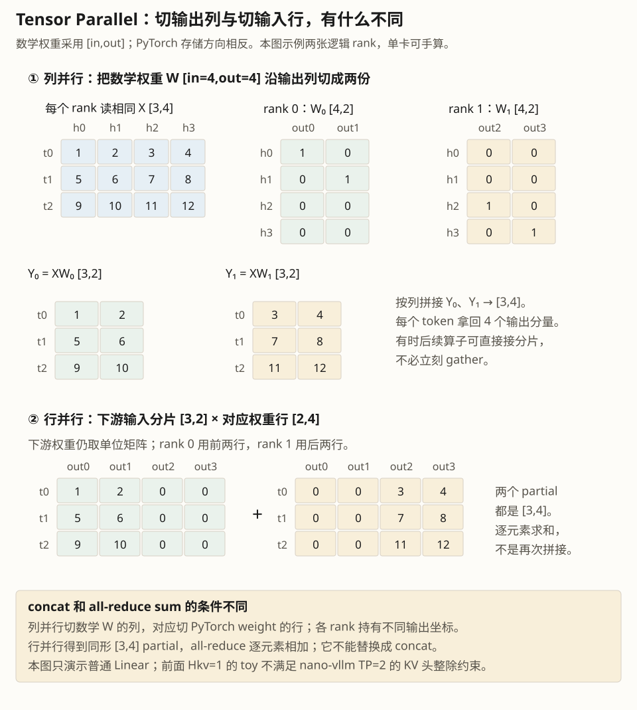

课程 05 · 并行
nano-vllm 的张量并行只有 156 行 linear.py 加一个共享内存通道——但它把 TP 的核心取舍全部暴露出来了：切什么、在哪同步、怎么传指令。

一张卡放不下 70B 模型时，最直接的办法是把权重切开。但切开的方式不止一种，代价也不一样：
| 方式 | 切什么 | 通信时机 | 适合 |
|---|---|---|---|
| 张量并行 TP | 每层的权重矩阵 | 每层都要通信 | 单机多卡、低延迟 |
| 流水并行 PP | 按层切成若干段 | 只在段边界通信 | 跨机、模型极深 |
| 专家并行 EP | MoE 的专家分给不同卡 | token 路由时 all-to-all | MoE 模型 |
nano-vllm 选 TP：每张卡都跑完整的层序列，但每层只持有 1/N 的权重。好处是延迟低（不需要等别的卡的层），坏处是每层末尾都要同步一次。
llm_engine.py · L24–31ctx = mp.get_context("spawn")
for i in range(1, config.tensor_parallel_size):
event = ctx.Event()
process = ctx.Process(target=ModelRunner, args=(config, i, event))
process.start()
self.ps.append(process)
self.events.append(event)
self.model_runner = ModelRunner(config, 0, self.events) # rank 0 留在主进程rank 0 不另起进程，它既当调度器又当一张卡。其它 rank 在 __init__ 末尾直接进入 loop()[L61–89]，等指令：
def loop(self):
while True:
method_name, args = self.read_shm() # 阻塞等事件
self.call(method_name, *args)
if method_name == "exit": break
def read_shm(self):
self.event.wait() # ① 等事件
n = int.from_bytes(self.shm.buf[0:4], "little") # ② 读长度
method_name, *args = pickle.loads(self.shm.buf[4:n+4]) # ③ 反序列化
self.event.clear() # ④ 复位
return method_name, args这条通道很有意思：用共享内存传数据，用 Event 传「有新数据」这个事实。没有 socket、没有 RPC 框架，1 MB 的 shared_memory 加一个 multiprocessing Event 就够了。
__getstate__sequence.py · L72–83def __getstate__(self):
last_state = self.last_token if not self.is_prefill else self.token_ids
return (self.num_tokens, self.num_prompt_tokens, self.num_cached_tokens,
self.num_scheduled_tokens, self.block_table, last_state)worker 侧只需要这 6 个字段。如果直接 pickle 整个 Sequence，token_ids 列表会跟着走——decode 时那是几千个 int，每条序列每步都传一遍，共享内存会被撑爆（1 MB），序列化开销也会盖过计算收益。自定义 __getstate__ 是分布式推理里最常见的优化之一。
tcp://localhost:2333 是写死的。同一台机器跑两个实例会端口冲突；跨机部署必须改。生产框架（vLLM）会从环境变量读 MASTER_ADDR/PORT。
linear.py 的类不是随便分的，每个都对应一种「矩阵怎么切、权重怎么从 HF checkpoint 里取」。
| 类 | 切法 | 通信 | 典型用途 |
|---|---|---|---|
ReplicatedLinear | 不切，每卡一份 | 无 | 小矩阵、bias |
ColumnParallelLinear | 按输出维切 | 无（输出天然分片） | QKV、gate/up |
RowParallelLinear | 按输入维切 | all-reduce | attention 输出、down |
VocabParallelEmbedding | 按词表切 | all-reduce（mask 后） | embedding |
linear.py · L131–156class RowParallelLinear(LinearBase):
def __init__(self, input_size, output_size, bias=False):
tp_size = dist.get_world_size()
super().__init__(divide(input_size, tp_size), output_size, bias, 1)
def forward(self, x):
y = F.linear(x, self.weight, self.bias if self.tp_rank == 0 else None)
if self.tp_size > 1:
dist.all_reduce(y) # 每卡算出部分和，加在一起
return y为什么 RowParallel 必须 all-reduce？因为它按输入维切：每张卡拿到的 x 是输入的一部分，算出的是完整输出的部分和。只有加起来才是真正的结果。而 ColumnParallel 按输出维切，每张卡的输出本来就是最终结果的一段，不需要通信。
Qwen3 的 Q、K、V 三个矩阵在 checkpoint 里是三个张量，但推理时可以拼成一个大矩阵一次算完（减少 kernel 次数）。QKVParallelLinear 的 weight_loader 负责把三个张量按 head 切好再拼进同一个参数——注意 KV head 数通常比 Q head 少（GQA），所以切分尺寸不一样。
以 Qwen3-0.6B、2 卡为例，每层有两处 all-reduce：attention 的 o_proj 之后、MLP 的 down_proj 之后。每处传的是 [tokens, hidden] 的激活值。
这解释了 TP 的一个反直觉现象：decode 阶段 TP 的加速比往往达不到线性，因为每步固定要做 2L 次 all-reduce，而计算量只有 O(bs)。这也是为什么大模型 decode 更偏好 EP 或 PD 分离。
Qwen3-0.6B：28 层，hidden = 1024，激活用 bf16。TP=2，decode 时 batch = 16。每次 all-reduce 要传多少字节？一轮 decode 总共传多少？
每处 all-reduce 的张量是 [16, 1024] bf16 = 16 × 1024 × 2 = 32 KiB。
每层 2 处，28 层 → 56 处 → 56 × 32 KiB ≈ 1.75 MiB 每轮 decode。
按 4070 Ti 的 NVLink 缺失、走 PCIe 的情况（约 10 GB/s 有效），光通信就要约 0.18 ms——而 decode 一步的总时间通常在 10–30 ms 量级，所以 1% 左右，可以接受。但换成 4096 token 的 prefill，激活是 4096×1024 的百倍量级，通信就会变成瓶颈。
ColumnParallelLinear.weight_loader 为什么要 narrow(tp_dim, start_idx, shard_size)？HF 的 checkpoint 存的是完整权重，每张卡只该拿自己那一片。按 tp_rank * shard_size 起 offset 取一段，就得到本 rank 的分片——注意切的是输出维（tp_dim=0）。
RowParallelLinear 的 bias 只在 rank 0 上加？bias 是完整向量，不是部分和。如果每张卡都加一遍，all-reduce 之后 bias 会被加 N 次。所以只在 rank 0 加，再让 all-reduce 把它摊开——这是「bias 只加一次」的标准做法。
VocabParallelEmbedding.forward 里 mask 的作用是什么？每张卡只持有词表的一段。不在本段里的 token id 要屏蔽掉（置 0），否则会越界取到别的 embedding。屏蔽后 all-reduce，各卡的贡献拼成完整结果——这是词表并行的标准 pattern。
「TP 和 PP 怎么选？」
「TP 切的是每一层的矩阵，每层都要 all-reduce，所以对带宽敏感、适合单机 NVLink；它的优点是延迟低，所有卡同时在算同一批 token。PP 切的是层，卡与卡之间只有边界激活要传，通信少但会出现流水线气泡，适合跨机和超深模型。实际的大模型推理通常是 TP + PP + EP 组合：机内 TP、机间 PP、MoE 用 EP。」
可以问：「没有 NVLink 的消费卡上 TP 还有意义吗？」我们会用你的 4070 Ti 实测一次，数字比结论更有说服力。